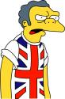
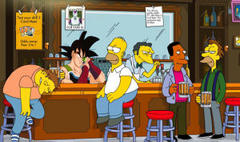
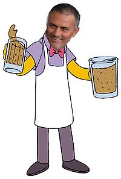

Moe Szyslak
 De: La Frikipedia, la enciclopedia extremadamente seria.
De: La Frikipedia, la enciclopedia extremadamente seria.
| De la serie animales y otros bichejos:
|

|
| Moe "lavando" los tarrones.
|
|
| Nombre común:
|
Moe Shislark Dumbledore Diaz Chikilicuatre Norris Cudeiro García I de Borbón.
|
| Nombre científico:
|
Camarerus sucious.
|
| Especie:
|
Mono con birra.
|
| Subespecie:
|
Tonto a las tres (y a las cuatro, a las cinco...)
|
| Alimentación:
|
Birras.
|
| Apariencia:
|
Cara de mono.
|
| Hábitat natural:
|
Alcantarillas y bares.
|
| Localización:
|
El bar de Moe.
|
| Número aproximado de ejemplares:
|
Uno.
|
| Fecha de extinción:
|
Dentro de poco.
|
| Pokemonización:
|
Carmen de Mairena.
|
Moe es el individualista propietario del mejor bar de Springfield (de los pocos que aparecen en la serie) después de cualquier nevera de cualquier casa que contenga cerveza. Aún así hay gente que va a su bar, la cual tienen cociente intelectual de -0.Entre ellos está Pepe Livinstong, Pili y Mili, La Hamburguesa Vegetal, esto fracasó debido a que a Bill Gates se le había olvidado elegir la habilidad "abrir puertas" de el manual del jugador, sin esto, no fue capaz de abrir la puerta del bar y no pudo salir, quedándose atrapado en el mundo de Lo Monaco, A Yavin IV y luchó con las guarras jébicas en Las Guerras Jébicas del lado de los Frikis.

Moe echando pacíficamente a un cliente que le ha llamado guapo.
Los 10 mandamientos de Moe
Se publicaron una serie de mandamientos acerca de él:
- Amarás a Moe sobre todas las cosas.(Según este mandamiento toda la gente está pecando incluso Moe, ya que hasta el se odia)
- No tomarás el nombre de Moe en vano.(Hay que ser muy friki para hacerlo)
- Santificarás las Siestas. (O te hará dormir para SIEMPRE)
- Honrarás a la Cerveza y la Escopeta.(O si no, Chuck Norris te pegará una patada giratoria)
- No matarás a Moe. (Cualquiera le mata con la
polla escopeta que tiene)
- No cometerás actos impuros con Moe (No creo que nadie tenga tan mal gusto y si lo haces te comerá un nabish)
- No robarás a Moe (No tiene un duro, solo una peseta y del año 432)
- No dirás falsos testimonios ni mentiras sobre Moe. (Porque por muy malas cosas que digas todas son verdades, excepto que es feo)
- No consentirás actos ni deseos impuros (Querer beber la Cerveza de Barney, ya que este se transformará en super saiyan nivel 5'7 por la rabia que le entrará y te matará)
- No codiciarás los bienes de Moe (No tiene ninguno y para uno que tiene es la escopeta y a ver quien es el guapo que se la quita ya que la tiene pegada a
los cojones la mano)
Secretos de Moe
- Era más feliz antes de saber que los drackqueen eran hombres
- Para él una relación no se pueden basar en mentiras, las mentiras vienen después
- Fue campeón de boxeo
- Moe no es su verdadero nombre, se lo cambió al comprar el bar para no tener que comprar un nuevo cartel
- ...Pero hay quien dice que le llamaron así cuando comenzó a perder en el boxeo
- Es italiano
- Estuvo liado con Karapabell
- Tenía ilegalmente en su almacén una orca
- Escondía gitanos en el subsuelo del bar
- La espuma de sus flameados lleva
farli dalsy
- Trafica con osos panda con los chinos
Pertenencias más valiosas de Moe
- Su trapo para limpiar los vasos (aunque no lo use nada más que para limpiarse el culo)
- La escopeta (Se la encontró en la basura del callejón de atrás aunque también se cree que la pudo cagar)
- Su cerebro, no espera, me he confundido (le tocó en la tombola en la que compró todos los boletos, pero aún asi no le tocó, asi que lo tiraron y el lo cogió)
- Los pantalones (Se ve que le gustan, siempre lleva los mismos)
- Tarro de las propinas (con el que queria pagar la fianza para sacar a Homer de la carcel aunque al final se compró una muñeca hinchable)
- Vespino de séptima mano con cenicero, ruedas rosas, pinchadas y de cartón con una pegatina de el señor y la Señora Pac-Man y un posa-vasos para poner su gaseosa Canon.
- El cartucho de escopeta con el que mató por primera vez a un hombre topo
- Su primer condón,usado para hacerse una paja
- Su frasco de huevos de paloma en vinagre, del cual tiene numerosas fotografías, como dato curioso el vinagre está hecho de lo que le queda después de lavarse el cabello (y así y todo los ebrios le comen los huevos)
Amigos de Moe=
 Belleza inquisidora de Moe usando su camiseta de Gran Bretaña cuando estaba puesto de todo (vease
Yonki)
- Goofy: Con el que monto una "fiesta inocente" (ver introducción).
- Yo
- El Capitán Pescanova: Fué el primero en comprarle las barritas de pescado (se las daba a las ratas).
- Bardock:Atiende con junto con moe el bar.
- The Boogeyman: Le regala los gusanos que encuentra en su ano.
- El Fary: Moe le regaló la latra de la canción "Apatrullando la ciudad".
- Chuck Norris:(Esto es mentira Chuck no tiene amigos).
- Britney Spears:Le vendía las
drogas chucherías que necesita para vivir.
- Michael Jackson: Este ha enfriado su relación con Moe desde que este le operó la cara.
- Su madre: ¡Coño! Porque es su madre, es lo normal ¿no?
- Él. (Coño! porque es él.
- Darth Vader: Moe le dijo la verdad sobre su nacimiento: "Yo soy tu padre" y se le ocurrió una idea para la película en la que iba a participar....
- Doraemon: Le proporcionó condones pinchados robots del futuro.
- Tokio Hotel: De algún sitio tuvieron que salir estos.
- Jonas Brothers: También... por eso de los condones y el anillo de pureza
- Jesucristo: Moe le ayudó a tener la labia suficiente para engañar a la gente.
- Gigatron: Se encontraron con Moe en Hollywood y se fueron a matar [pijos].
 bardock y moe son grandes amigos
Enemigos de Moe
- Joe:Propietario del bar de Joe en Selviville.(No quiso fundar un super-bar llamado "Bar de Moe & Joe" (Nombre fiel a la originalidad de ambos)
- El monstruo del spaguetti volador:Por no creer en Jesucristo
- Matu:El que hizo este truño de artículo
- Los frikis:Por que no les da cerveza
- Los emos:Por no dejarles su escopeta (¿Para que la querrán...?)
- Perinola:Este es uno de los grandes malhechores de la humanidad.Actualmente se le conoce por Pericop.
- Barney Gumble: por criticar su lista de enemigos diciendo que era robada
- Cthulhu: Moe forma parte de la resistencia ante la dominación mundial de Cthulhu (tulú)
- Gnomos: Son los principales aliados de Cthulhu. Moe no llegó a pensar eso de "los enemigos de mis enemigos son mis amigos" pero es que Moe les debe dinero.
¿Sabias qué...
- ...Se intenta suicidar todas las navidades pero no lo logra .
- ...Moe es en realidad un inmigrante ilegal?
- ...aprendió a hacer bebidas en su universidad?
- ...Es socio fundador del club de tiro de Springfield?
- ...Continúa recibiendo cheques por regalías por su participación como niño actor en el programa "Nuestra pandilla", filmada en los años 40. Moe era el chico feo?.
- ...Moe es feo.
- ...Juega bolos con su equipo de liga, “los amigos del pino”?
- ...tuvo los webos de decir que Chuck era feo?
- ...que después de esto murió con la cara tan cambiada que se volvió guapo?
- ...que ve
porno Los Lunnis las 26 horas del día?
- ...a Moe le atrae Ned Flanders?
- ...salvo a Maggie Simpsons en un capítulo y desde ese día se le desarrollo el instinto paternal? (Aviso:mujeres estad alerta si veis a una gárgola moviendose huid que quiere tener un hijo)
- ...los wombats salieron del bar de Moe?
- ...de echo Moe es el padre de todos los wombats?
- ...Moe es tan feo, que al verle a la gente se le sube el ánimo?
- ...Moe disfruta cuando le pegan una patadas en los webos?
- ...Moe caga para arriba?
- ...la ultima cita de Moe fue en el año 1400 A.D.(Antes de Dios)?
- ...Moe en realidad está muerto ya que se miró al espejo y del susto le dio un ataque al corazón?
- ...Hay una unidad de medida en el sistema internacional llamada "El Moel"(Mol) y mide la cantidad de cerveza que hay en un vaso (cantidad de sustancia).
- ...Moe se presentó a las elecciones de su bar él solo y perdió
- ...Inventó el Flameado de Moe?
- ...Que le salio joroba por cagar hacia Arriba
- ...Que se tiro a March Simpson
- ...Se caso secretamente con Barney y sale disfrazado en Barney y sus amigos
- ...Su bar se teletransporta por Springfield. También se dice que se ha visto este bar en chueca momentáneamente
El bar de Moe y algunas anecdotas de la vida de Moe
 Su hermano
Mou también flamea
Este bar esta considerado como un hito de la arquitectura por ser el primer edificio en que entró Chuck Norris y no se cayó. Moe se lo compró a Hasecorp como la primera parte de su plan de dominar el mundo: El compraba el bar, la gente iba a el bar, la gente se emborrachaba, el las violaba robaba , juntaba el dinero robado y compraba un piojo de la cabeza de torrente con el cual iba infectando a toda la gente de Farytis aguda dejandolos más tontos que las piedras. Pero no contaba con un super-agente del F.B.I. llamado BarneyGumble el cual le saboteaba bebiendose toda la cerveza por lo que la gente no se podía emborrachar fracasando el plan ya que uno de esos valiosísimos piojos valen 1/1000000000000000000 parte de un pelo de Chuck es decir que tienen un valor incalculable. Entonces Moe le fué a pedir ayuda a su tía Leticia Sabater que le dijo que para dominar el mundo tenía que capturar un nabish y tirarle su lefa a Chuck Norris para que este se quedase ciego y así poder hacer todo lo que quisiese. Pero la muy cabrona putona que odiaba a su hermana, la madre de Moe, (Marujita Díaz) le había mentido por lo que al tirarle la lefa a Chuck este se enfuració y como si podía ver le metió una patada giratoria que le quede más feo que el culo de un mandril cagao. Por ello dejó de hablar a su tía y se metió de nuevo en su bar; al que llenó de suciedad y humo para que no se le viese bien su cara. Ultimamente quiso participar en el Grand Prix pero las vaquillas murieron del susto y a Ramón García se le cayó la capa del día de nochevieja por lo que le echaron a patadas educadamente.
Le han hecho una super oferta por su bar: el paga 100.000€ y El Vaticano se queda con él. Moe ha respondido que le parece poco dinero. Le hicieron otra oferta del Carrefour en la que el pagaría vistiendose de Otaku para anunciar una marca de turrones de verano, pero tampoco aceptó ya que decía que o se vestía de Ciberjesús o no lo hacía. Carrefour no quiso aceptar sus exigencias porque la campaña era de venta de turrón no de venta de condones por lo que expiró la oferta.
Autor(es):
- Krusher
- Sethiric
- Frikiman
- Roms
- Matu 1270
- Azulejos
- El Sevillano
- Matu
- Danark
- Daikataro
Frikipedia 2005-2016, Licencia
GFDL 1.2 - Extraído por FrikiLeaks